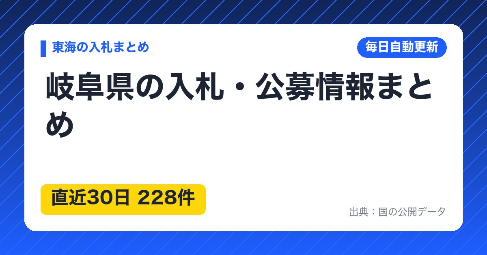

岐阜県の入札・公募情報まとめ

直近30日に公告された案件 228件（工事 155／物品 8／役務 7）
広告入札参加・技術者の配置に：
・施工管理技士の受験対策 通信講座（独学サポート事務局）  （1級・2級の土木・建築・電気・管工事に対応）
（1級・2級の土木・建築・電気・管工事に対応）
件数の多い地域：岐阜市(41)、土岐市(13)、恵那市(13)、下呂市(8)、可児市(8)、御嵩町(7)
国の機関・独立行政法人・自治体の案件を、公告日の新しい順に並べています。
国の機関・独立行政法人・自治体の案件を、公告日の新しい順に並べています。
工事（155件）
物品（8件）
物品重油購入単価契約
役務（7件）
その他（58件）
その他ナースカート 100式
その他建委第58号
その他建工第49号
その他建委第57号
その他上水物第2号
広告